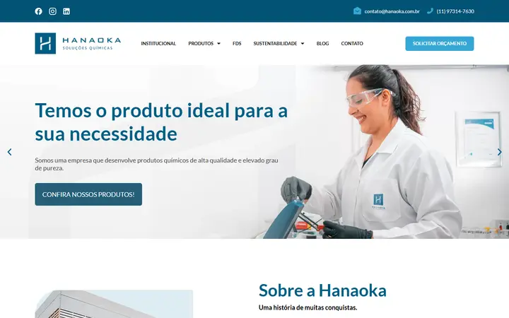
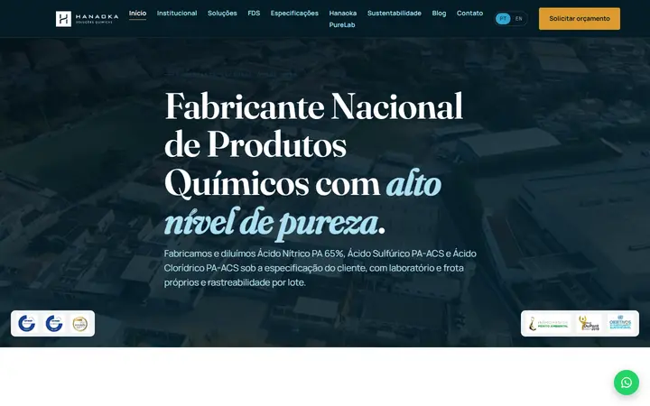
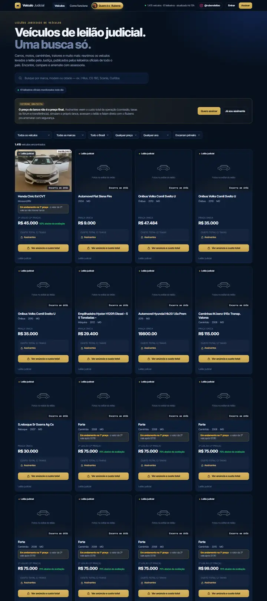
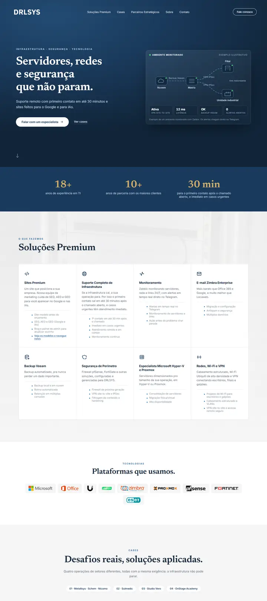

Vídeo 9:16Raphael Mattos no palco. Reel DLaJNTctdnN.
[Transcrever a fala do Raphael: a responsável pelo sucesso do Instagram dele é a Amanda.]
Raphael Mattos empresário e palestrante
Estratégia, imagem e site para empresas premium
Estratégia de redes, captação de vídeo, tráfego, treinamento comercial e site feitos pelo mesmo time, do primeiro post ao lead atendido.
Atendemos poucas empresas por vez. Toda aplicação é analisada.
Com quem a Amanda Takahashi já trabalhou
Amanda Takahashi já trabalhou com Raphael Mattos, na Scale Club, e com Marcus Marques, no Acelerador Empresarial. Gravou entrevistas com Joel Jota e Graciane Barbosa e é embaixadora da Community.
Toda marca começa com uma faísca.
A estratégia dá direção.
A imagem faz parar o scroll.
O ritmo cria audiência.
Tudo se conecta.
Do post ao cliente.
Provas
Muita gente vende gestão de redes. Poucas pessoas têm autoridades do mercado contando, em público, o que mudou depois que elas entraram.
[Transcrever a fala do Raphael: a responsável pelo sucesso do Instagram dele é a Amanda.]
Raphael Mattos empresário e palestrante
[Trecho mais forte da entrevista com o Joel Jota.]
Joel Jota entrevista
[Trecho mais forte da entrevista com a Graciane Barbosa.]
Graciane Barbosa entrevista
Cada um entrega a sua parte e ninguém responde pelo resultado. Na Halo, os três fios saem do mesmo plano.
O time
Os três sócios estão no seu projeto do diagnóstico à entrega. Você não fala com atendimento: fala com quem faz.
Estratégia e redes
Define o que a sua empresa fala, para quem e em qual formato: posts, stories, reels e LinkedIn, num calendário pensado para gerar lead. Já trabalhou com Raphael Mattos, na Scale Club, e com Marcus Marques, no Acelerador Empresarial.
Imagem, tráfego e comercial
Capta e edita foto e vídeo com olhar de estratégia, cuida do tráfego pago e treina o seu comercial para atender o lead que chega. Fez isso em grandes clínicas odontológicas, onde cada agendamento perdido custa caro.
Site e tecnologia
Vem da TI e constrói o site que recebe todo esse tráfego: rápido no celular, feito para o Google e organizado para ser citado por ChatGPT, Gemini e Perplexity.
Como funciona
Você conta sobre a empresa. Analisamos se o projeto faz sentido para os dois lados.
Uma conversa com os três sócios. Olhamos redes, site, anúncios e como o seu comercial atende.
Posicionamento, linha editorial, roteiro de captação e estrutura do site num documento só.
Produção, publicação, tráfego e ajustes guiados pelos números de cada mês.
Case
Fabricante de ácidos e sais de alta pureza desde 1985, com laboratório e frota próprios. O site antigo abria com um carrossel e a frase "Temos o produto ideal para a sua necessidade", que serviria para qualquer empresa. O novo diz na primeira linha o que a Hanaoka fabrica e mostra os selos e prêmios logo abaixo.


Arraste para comparar o topo do site antigo com o novo.
Outros projetos
Todos feitos sob medida e escritos para aparecer no Google e nas respostas das IAs.

Plataforma de busca
Reúne num só lugar os veículos de leilão judicial publicados por leiloeiros oficiais de todo o país, atualizados todos os dias.
+6 mil seguidores no @rubensleilao depois do lançamento
Projeto internacional · Brasil e Austrália
Site e landing page do ecossistema de quem leva brasileiros para estudar, trabalhar e viver na Austrália. Cliente do outro lado do mundo, com conteúdo em reais e em dólar australiano e cotação ao vivo.
Ver o site ↗Ver a landing page ↗
23 anos de mercado e mais de 200 mil vistos aprovados pela Expert Education

Site institucional
A empresa de infraestrutura de TI do João: servidores, redes e segurança, com um site que trata tecnologia como assunto premium.
Menos de 1 semana do briefing ao site no ar
Para quem é
Perguntas
Cuidamos da presença digital inteira de empresas premium: estratégia e gestão de Instagram, Facebook e LinkedIn, captação e edição de foto e vídeo, tráfego pago, treinamento do time comercial para atender os leads e criação do site. Tudo feito pelo mesmo time, com um plano só.
Por causa do efeito halo, descrito pelo psicólogo Edward Thorndike em 1920: quando uma pessoa tem uma ótima impressão de uma marca em um ponto, ela estende essa impressão para todo o resto. Um Instagram com autoridade, um vídeo bem feito e um site rápido fazem o cliente confiar na empresa antes da primeira conversa. É esse efeito que construímos.
O valor é definido depois do diagnóstico, porque depende do tamanho da empresa e do que já existe. Trabalhamos com empresas que já reservam verba mensal para marketing.
O diagnóstico mostra por onde começar. Às vezes é o site, às vezes é a captação. Mesmo quando começamos por uma frente, ela é planejada pensando nas outras.
Empresas de ticket alto que querem crescer nas redes e gerar clientes: clínicas, indústrias, serviços profissionais, educação e negócios liderados por especialistas.
Feito sob medida, sem template. Carrega rápido no celular, é escrito para o Google e organizado para ser citado por assistentes de IA como ChatGPT, Gemini e Perplexity.
Preencha a aplicação logo abaixo. Analisamos cada empresa e, se fizer sentido, marcamos um diagnóstico com os três sócios.
Aplicação
Leva dois minutos. Lemos todas as aplicações e, se fizer sentido seguir, chamamos você no WhatsApp para marcar o diagnóstico.